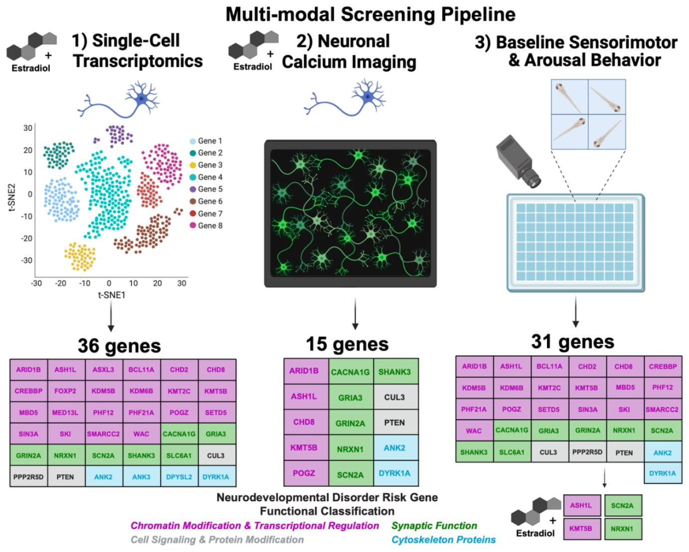
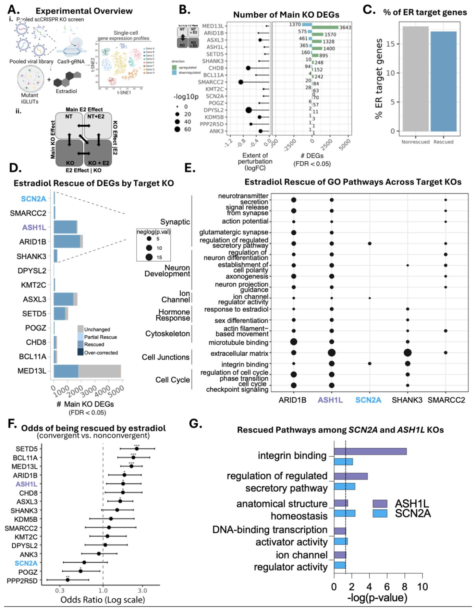
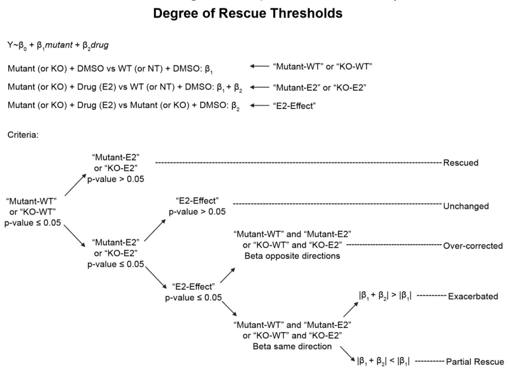
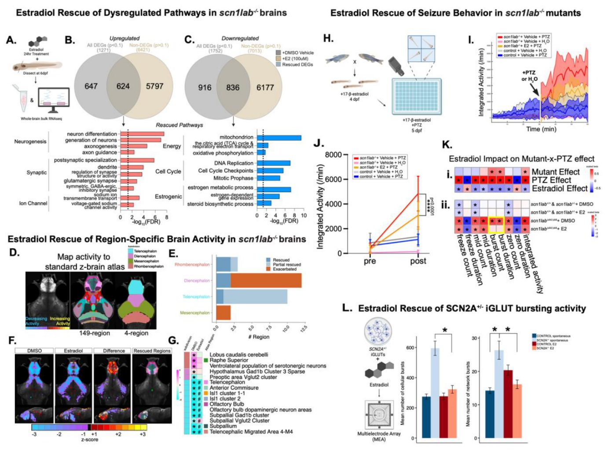
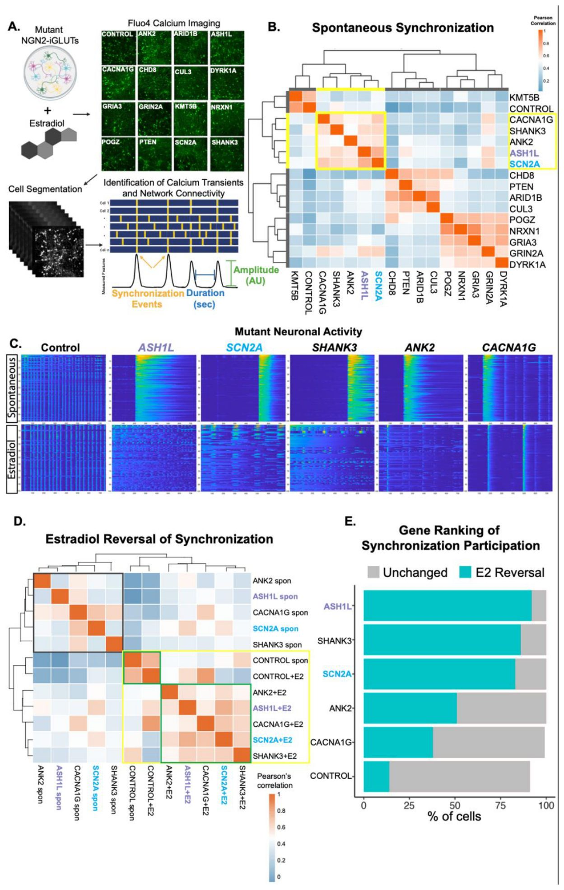
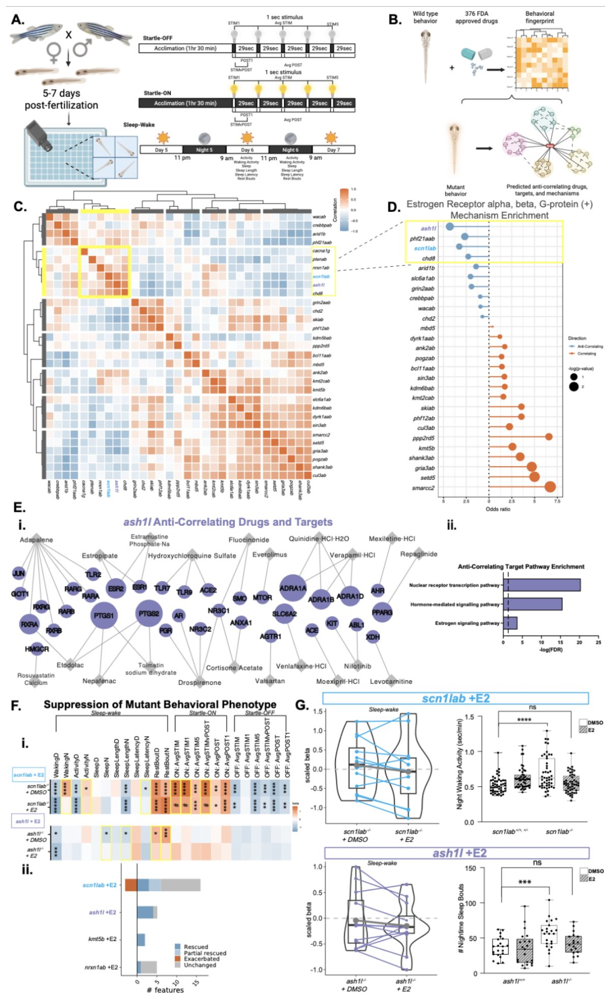
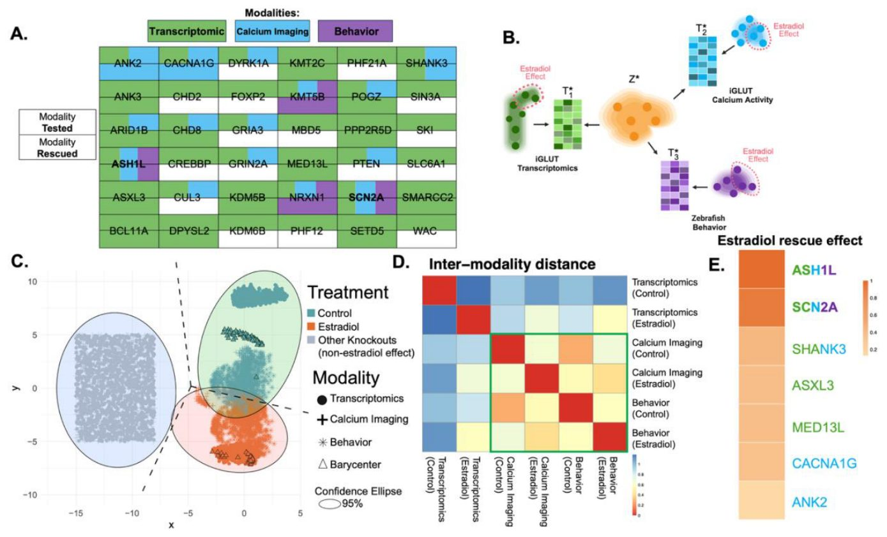
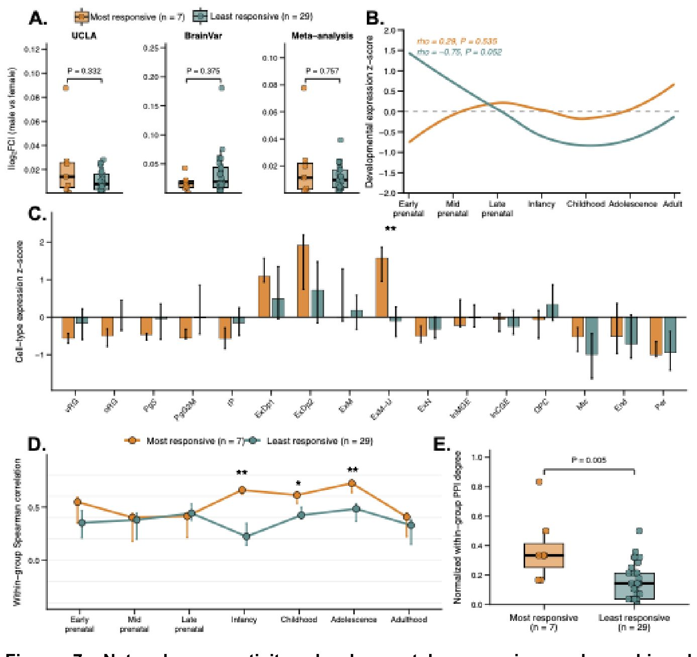

Как гормоны влияют на гены аутизма и расстройств развития мозга
{kind=link}

Половые гормоны традиционно считаются ключевыми факторами различий в работе мозга, но их роль при генетических нарушениях изучена слабо. Исследователи проверили, как эстрадиол влияет на нейроны с мутациями в 36 генах, связанных с аутизмом и расстройствами развития. Оказалось, что гормон частично сглаживает генетические нарушения на уровне экспрессии генов, но точечно успокаивает избыточную активность нейронов лишь для некоторых мутаций.
Главное
- Эстрадиол тестировали на 36 генах риска аутизма и расстройств развития
- Гены ASH1L и SCN2A показали максимальную чувствительность к гормону
- Гормон универсально правит экспрессию генов, но точечно гасит возбудимость
Подробнее
Чтобы понять масштаб влияния половых гормонов на патологии развития нервной системы, исследователи использовали нейроны из индуцированных плюрипотентных стволовых клеток человека и личинок рыбок данио-рерио. В эксперименте с помощью системы CRISPR отключили 36 крупных генов с высоким риском аутизма и расстройств развития. Эти гены отвечают за регуляцию транскрипции, синаптическую передачу и структуру цитоскелета. Обработка эстрадиолом в концентрации 100 нанмолей в течение суток показала, что молекулярный ответ включает как универсальные, так и сугубо индивидуальные механизмы для разных мутаций.
Анализ выявил универсальный эффект: эстрадиол частично восстанавливает нарушенный профиль экспрессии генов во всех изученных линиях. Однако нормализация электрической активности сетей происходила выборочно. Мутации в генах ASH1L и SCN2A продемонстрировали наибольшую чувствительность к терапии, ответив полным восстановлением молекулярных и клеточных свойств в человеческих нейронах, а также поведенческих реакций у рыбок. Семь наиболее отзывчивых на гормон генов образуют плотную сеть белковых взаимодействий и активно экспрессируются в зрелых возбуждающих нейронах верхних слоев коры.
Ограничения
Работа выполнена на клеточных культурах in vitro и моделях рыбок данио-рерио, а также использует препринт без независимой экспертной оценки.
Подробный разбор статьи
Резюме
Введение
Сигнализация половых гормонов в процессе развития нервной системы способна выступать в роли модулятора риска возникновения различных нейроразвивающихся расстройств, включая расстройства аутистического спектра. Чтобы детально исследовать эти эффекты, авторы провели систематическую многоуровневую оценку влияния эстрадиола на фоне мутаций потери функции в 36 функционально разнообразных крупных генах риска расстройств аутистического спектра и других нейроразвивающихся нарушений. Для этого использовались нейроны человека, полученные из индуцированных плюрипотентных стволовых клеток, а также личинки рыбок данио-рерио.
Пояснение
Использование индуцированных плюрипотентных стволовых клеток человека позволяет превратить клетки кожи или крови в нейроны с конкретными генетическими мутациями, что дает возможность изучать живую человеческую мозговую ткань в лабораторных условиях.
В ходе работы были выявлены как общие, так и различающиеся взаимодействия между генами и эстрадиолом на транскриптомном, нейросетевом и поведенческом уровнях. Выяснилось, что эстрадиол способен частично сглаживать нарушения профилей экспрессии генов, вызванные нокаутом любого из исследованных генов риска расстройств аутистического спектра и связанных патологий. Однако его влияние на клеточном уровне носит избирательный характер: эстрадиол быстро и избирательно подавляет фенотипы нейронной гипервозбудимости только для определенной подгруппы нокаутированных генов.
Важно
Эстрадиол универсально корректирует нарушения транскриптома для всех 36 исследованных генов риска, но избирательно нормализует гипервозбудимость нейронных сетей лишь у некоторых из них.
Результаты
Особое внимание привлекли два гена — ASH1L и SCN2A, которые продемонстрировали наибольшую чувствительность к терапии эстрадиолом. Для них было зафиксировано впечатляющее восстановление молекулярных и клеточных параметров в человеческих нокаутных нейронах, а также успешная компенсация поведенческих нарушений у мутантных личинок рыбок данио-рерио. Анализ показал, что семь генов, наиболее отзывчивых к эстрадиолу, обладают повышенной плотностью белок-белковых взаимодействий, сильной коэкспрессией в определенные постнатальные периоды развития и обогащены в зрелых возбуждающих нейронах верхних слоев коры.
Осторожно
Работа выполнена на клеточных моделях человека и на рыбках данио-рерио, поэтому для подтверждения клинической применимости полученных результатов требуются дальнейшие исследования на более сложных млекопитающих и клинических выборках.
В итоге исследование описывает многоуровневые эффекты эстрадиола при потере функций ключевых генов риска, демонстрируя как универсальные изменения транскриптома, так и специфичное для конкретных генов спасение клеточных и поведенческих аномалий.
Введение
Роль эстрадиола в регуляции нейронных функций
Эстрадиол играет ключевую роль в работе мозга, регулируя нейрогенез, возбудимость нейронов, синаптическую пластичность и поведение как в возбуждающих, так и в тормозных цепях. Эти эффекты реализуются через два механизма. Геномный механизм включает связывание эстрадиола с ядерными рецепторами (ERα и ERβ), которые действуют как факторы транскрипции, модулируя экспрессию генов в течение часов или дней. Важно, что мишени ERα в мозге обогащены генами, связанными с РАС и другими нарушениями нейроразвития (НН). Быстрый негеномный механизм задействует мембранные рецепторы, такие как GPER1, которые активируют вторичные мессенджеры и ионные потоки (например, кальциевые) за считанные минуты.
Важно
Эстрадиол модулирует функции мозга через медленные геномные и быстрые негеномные пути, при этом его мишени часто пересекаются с генами, ассоциированными с РАС.
Пояснение
РАС/НН (расстройства аутистического спектра / нарушения нейроразвития) — группа состояний, вызванных генетическими и средовыми факторами, влияющими на развитие мозга.
Исследования показывают, что эстрадиол может корректировать дефициты, вызванные мутациями в генах риска РАС/НН. Например, он подавляет гиперактивность у мутантных рыбок данио (CNTNAP2), восстанавливает сигнальные пути в нейронах человека (hiPSC) с мутациями NRXN1 и нормализует пролиферацию клеток у головастиков с дефицитом DYRK1A. Однако масштаб влияния эстрадиола на широкий спектр генов РАС остается неизученным. В данной работе мы систематически оцениваем, как 17β-эстрадиол влияет на фенотипы, связанные с 36 функционально разнообразными генами высокого риска (включая ANK2, CHD8, PTEN, SHANK3 и др.), используя мультимодальный скрининг (Рис. 1).
Методы исследования
Для изучения взаимодействия между мутациями и эстрадиолом мы применили CRISPR-технологии для нокаута генов в различных моделях. Мы исследовали экспрессию генов (Рис. SN-1: 36 генов) и активность нейронов в человеческих индуцированных глутаматергических нейронах (iGLUTs, Рис. SN-2: 15 генов). In vivo анализ сенсомоторного поведения и возбудимости проводился на личинках рыбок данио (Рис. SN-3: 31 ген на базовом уровне, 4 гена при терапии эстрадиолом). Для гена scn1lab мы провели глубокий анализ, включая RNA-seq, картирование активности мозга и тесты на судорожную активность. Статистическая обработка позволила выявить, что мутации ASH1L и SCN2A наиболее эффективно поддаются коррекции эстрадиолом.
Пояснение
iGLUTs — нейроны, полученные из стволовых клеток пациента, которые специализируются на передаче возбуждающих сигналов через глутамат. Нокаут — метод «выключения» конкретного гена для изучения его функции.
Результаты
Эстрадиол восстанавливает транскрипционные эффекты генов риска РАС/НРД
Для изучения общих и специфических эффектов эстрадиола на транскриптомном уровне в контексте генов риска аутизма и нейроразвития (ASD/NDD) авторы отобрали 36 таких генов с доказанными эффектами потери функции (LOF), как показано на Рис. 1-1 и в Таблице SI 1. В фокус внимания вошли 22 регулятора экспрессии генов, включая эпигенетические модификаторы, регуляторы хроматина и транскрипционные факторы: ARID1B, ASH1L, ASXL3, BCL11A, CHD2, CHD8, CREBBP, FOXP2, KDM5B, KDM6B, KMT2C, KMT5B (SUV420H1), MBD5, MED13L, PHF12, PHF21A, POGZ, SETD5, SIN3A, SKI, SMARCC2, WAC. Кроме того, были отобраны 7 генов нейронной коммуникации (синаптические гены и ионные каналы: CACNA1G, GRIA3, GRIN2A, NRXN1, SCN2A, SHANK3, SLC6A1), 3 гена клеточной сигнализации (CUL3, PPP2R5D, PTEN) и 4 гена цитоскелета (ANK2, ANK3, DPYSL2, DYRK1A). Отбор генов не был привязан к различиям в пенетрантности между полами; многие из них демонстрируют сходную пенетрантность как у мужчин, так и у женщин (Таблица SI 1).
Пояснение
Метод CRISPR-KO и одноклеточное секвенирование (ECCITE-seq) позволяют одновременно отключать множество целевых генов в пуле клеток и с высокой точностью определять индивидуальный транскриптомный ответ каждой отдельной клетки.
Лентивирусная библиотека CRISPR-KO была создана на основе предварительно валидированных направляющих РНК (gRNA), содержащей по три-четыре gRNA на каждый ген (Таблицы SI 2 и SI 3). При этом 29 генов были отобраны и подтверждены в предыдущей работе исследователей. Был применен объединенный подход с нокаутом генов с помощью CRISPR (Рис. 2Ai) на стволовых клетках-предшественниках нервной системы (NPC), полученных из индуцированных плюрипотентных стволовых клеток человека (hiPSC) от двух доноров контроля (один мужчина, одна женщина, Рис. SI 1A), а также на функционально зрелых глутаматергических нейронах (iGLUT), полученных от одного донора-мужчины (Рис. 2 и Рис. SI 1A). Клетки обрабатывали эстрадиолом (E2 в концентрации 100 nM в течение 24 часов; экспрессия рецепторов представлена на Рис. SI 2, тесты на дозозависимость — на Рис. SI 3A) либо контрольным раствором носителя (DMSO).
{kind=link}

Осторожно
Эксперименты проводились на клеточных моделях человека (hiPSC-производных NPC и iGLUT), что воспроизводит лишь отдельные аспекты нейроразвития in vitro и требует осторожности при экстраполяции на целостный организм.
Прямое детектирование gRNA объединили с секвенированием РНК единичных клеток (ECCITE-seq) для сопоставления эффектов в различных типах клеток и условиях присутствия эстрадиола (валидация gRNA приведена на Рис. SI 4). После фильтрации и контроля качества ученые проанализировали в общей сложности 39 278 клеток для 16 нокаутов ASD/NDD генов и контрольных образцов со скремблированными gRNA: 7067 клеток NPC с раствором носителя, 5553 клеток NPC с E2, 14 471 клетка iGLUT с раствором носителя и 12 187 клеток iGLUT с E2 (Рис. SI 1B, C, Таблица SI 4). Комбинируя фильтрацию истощения целевых генов с анализом сетей взвешенных ближайших соседей (WNN), исследователи выделили клетки с успешными генетическими нарушениями и распределили их по кластерам, соответствующим конкретным нокаутам, опираясь на обогащение gRNA и профили экспрессии. Данная стратегия обеспечила получение медианных значений в 234 клетки для iGLUT и 198 клеток для NPC на каждую gRNA, а также 39 клеток для iGLUT.
Важно
В ходе масштабного скрининга с использованием пула CRISPR-KO и ECCITE-seq на почти 40 тысячах клеток (NPC и iGLUT) удалось успешно идентифицировать клеточные кластеры для 16 нокаутов генов ASD/NDD при воздействии эстрадиола (100 nM) и контрольного вещества.
Влияние нокаутов и эстрадиола на транскриптомные профили
Применение CRISPR-KO позволило идентифицировать 28 гидовых РНК (gRNA) для нейропротекторов и 28 gRNA для нейропредшественников (NPC), успешных более чем в 75 клетках. В среднем нокаут генов приводил к истощению целевых мишеней на 22% в нейронах iGLUT и на 26% в клетках NPC, что из-за неоднородности нонсенс-опосредованного распада в популяциях клеток может быть заниженной оценкой реального эффекта возмущения. Транскриптомные сигнатуры сопоставлялись с контрольными кластерами со случайными последовательностями (NT) по множеству осей для разделения эффектов нокаута, эстрадиола и их взаимодействия (Рис. 2Ai). На исходном уровне каждый ген риска расстройств аутистического спектра и нейроразвития (ASD/NDD) приводил к общим и специфическим дифференциально экспрессируемым генам (DEG, FDR < 0.05), которые не определялись степенью пертурбации каждого целевого гена (Рис. 2B, Рис. S1D). Для десяти генов ASD/NDD, успешно атакованных двумя или более gRNA, наблюдались устойчивые корреляции DEG с коэффициентом Пирсона от 0.66 до 0.87 (Рис. S4B).
{kind=link}

Для всех достоверных различий между нокаутом и контролем (p < 0.05) авторы ввели классификацию: усугубление (exacerbated) — пертурбация в том же направлении с большей значимостью; без изменений (unchanged) — отсутствие изменений направления или значимости; частичное спасение (partial rescue) — более слабое и менее значимое возмущение в исходном направлении; спасение (rescued) — утрата значимых различий между мутантом и контролем; и гиперкоррекция (over-corrected) — различие в противоположном направлении относительно исходного фенотипа. Влияние эстрадиола на DEG (FDR < 0.05) и биологические пути (FDR < 0.05) оценивалось для всех нокаутов. Эстрадиол восстанавливал экспрессию DEG в 13 исследованных нокаутах, хотя и с разной степенью эффективности (iGLUT FDR < 0.05, ранжировано по проценту восстановленных DEG, Рис. 2D; номинальное значение p < 0.05 для NPC, Рис. S1E).
Важно
Эстрадиол эффективно восстанавливает транскриптомные профили для 13 исследованных нокаутов, причем наибольшую устойчивость демонстрируют гены ASH1L и SCN2A.
В ходе анализа выделены два гена с устойчивыми мультимодальными эффектами восстановления под действием эстрадиола: ASH1L и SCN2A. Сравнение размеров эффектов основного нокаута и нокаута после обработки эстрадиолом показало, что эстрадиол сглаживает негативные эффекты мутаций, а эффекты нокаута и эстрадиола коррелируют отрицательно (Рис. 5, верхняя и нижняя панели). Ранее было показано, что точки конвергенции генов риска NDD/ASD наиболее выражены в зрелых нейронах iGLUT, где они затрагивают синаптические и эпигенетические сети. Неожиданно оказалось, что спасенные DEG не были обогащены мишенями рецепторов эстрогена сильнее, чем неспасенные, что указывает на участие негеномных сигнальных путей (Рис. 2C, Рис. S6A, S6C-G).
{kind=link}

Пояснение
Негеномные сигнальные пути — это механизмы передачи сигнала внутри клетки, которые реализуются через быстрые белковые взаимодействия и каскады киназ без прямой активации транскрипции в ядре.
Конвергентные DEG, определяемые по значимому метааналитическому FDR (FDR < 0.05), незначимому тесту гетерогенности Кокрана (p > 0.05) и общему направлению изменений у всех 16 нокаутов, чаще поддавались коррекции эстрадиолом по сравнению с неконевергентными в 7 генах-мишенях (точный тест Фишера, *FDR < 0.001, FDR < 0.01, *FDR < 0.05) (Рис. 2F, Рис. S6B). Все пути Gene Ontology (GO), значимые для основного эффекта нокаута (p < 0.05), сравнивались с действием эстрадиола внутри нокаутов. В нейронах iGLUT эстрадиол восстанавливал нарушенные пути синаптической передачи, развития нейронов, организации цитоскелета, клеточных контактов, клеточного цикла, ответа на гормоны и активности ионных каналов для топ-5 нокаутов (Рис. 2E, Таблица S5). Для ASH1L и SCN2A восстанавливались пути, связанные с интекринами, структурным гомеостазом и транскрипционной активностью (Рис. 2G). У клеток NPC для 8 нокаутов эстрадиол возвращал в норму пути транскрипции, трансляции, мембранного транспорта, митохондриальной энергетики и межклеточных контактов (Рис. S1F-G, Таблица S6).
Быстрая коррекция гиперсинхронности нейронных сетей при РАС/НДР под действием эстрадиола
Для изучения негеномных эффектов эстрадиола в iGLUT-нейронах мы применили CRISPR-нокаут (KO) 15 генов в сочетании с кальциевым имиджингом (краситель Fluo4). Выборка включала регуляторы экспрессии (ARID1B, ASH1L, CHD8, KMT5B, POGZ), гены нейронной коммуникации (CACNA1G, GRIA3, GRIN2A, NRXN1, SCN2A, SHANK3), а также гены цитоскелета (ANK2, DYRK1A) и сигнальных путей (CUL3, PTEN) (Рис. 1-2). Активность нейронов оценивали на 30-й день (30DIV, незрелые сети — спайки отдельных клеток) и на 60-й день (60DIV, зрелые сети — синхронизированные осцилляции и сетевые вспышки) (Рис. 3A; Рис. SN 7, 8A).
{kind=link}

Пояснение
CRISPR-KO — метод «выключения» конкретного гена для проверки его функции, а кальциевый имиджинг с Fluo4 позволяет визуализировать активность нейронов через изменение концентрации ионов кальция в реальном времени.
На стадии 30DIV эстрадиол (100 нм, мгновенное воздействие) нормализовал частоту спайков у 5 линий (SHANK3, DYRK1A, POGZ, GRIA3, GRIN2A) и амплитуду у 6 линий (DYRK1A, POGZ, GRIA3, GRIN2A, CACNA1G, SHANK3) (Рис. SN 7). В зрелых сетях (60DIV) исходно выделили 4 кластера активности: 1 — контроль; 2 — длительная гиперсинхронизация (ASH1L, SCN2A, SHANK3, ANK2, CACNA1G); 3 — гипоактивность (ARID1B, CUL3, CHD8, PTEN); 4 — промежуточный тип (NRXN1, GRIA3, POGZ, GRIN2A, DYRK1A) (Рис. 3B, 3C; Рис. SN 8B-E).
Важно
Эстрадиол наиболее эффективно устранил гиперсинхронность в кластере 2 (ASH1L, SCN2A, SHANK3, ANK2, CACNA1G), восстановив нормальные паттерны осцилляций сразу после введения.
После обработки эстрадиолом профили активности KO-нейронов стали ближе к контрольным (Рис. 3D). Наиболее выраженный эффект наблюдался в кластере 2: гиперсинхронность быстро сменялась нормальными осцилляциями (Рис. 3C). Степень восстановления оценивали по доле синхронизированных клеток (Рис. 3E). Полученные данные подтверждают, что эстрадиол способен мгновенно корректировать аномальную активность, вызванную мутациями в ряде генов риска РАС/НДР, через негеномные механизмы.
Осторожно
Исследование проведено на iGLUT-нейронах (in vitro), поэтому наблюдаемые эффекты требуют подтверждения в живых организмах для оценки клинической значимости.
Спасение фенотипа поведенческих нарушений и расстройств сна с помощью эстрадиола in vivo
Исследователи провели комплексную оценку базового сенсомоторного поведения и показателей бодрствования на моделях Danio rerio для 31 ортолога генов, ассоциированных с расстройствами аутистического спектра и нарушениями нейроразвития (ASD/NDD). В экспериментах использовались как мозаичные F0-нокауты (CRISPants), так и стабильные мутантные линии (Рис. 1–3; Таблицы S8–S11). Среди изученных генов 19 являлись регуляторами экспрессии генов (ARID1B, ASH1L, BCL11A, CHD2, CHD8, CREBBP, KDM5B, KDM6B, KMT2C, KMT5B, MBD5, PHF12, PHF21A, POGZ, SETD5, SIN3A, SKI, SMARCC2, WAC), 7 относились к генам межнейронной коммуникации (CACNA1G, GRIA3, GRIN2A, NRXN1, SCN2A, SHANK3, SLC6A1; при этом у рыбок Danio rerio ген scn1lab выступает ортологом человеческих SCN1A и SCN2A), 3 входили в группу сигналинга и модификации белков (CUL3, PPP2R5D, PTEN), и 2 являлись цитоскелетными генами (ANK2, DYRK1A).
Количественный анализ поведенческих профилей выполнялся с помощью высокопроизводительного автоматизированного видеотрекинга по 24 параметрам зрительной реакции испуга (VSR) и цикла «сон — бодрствование» (Рис. 4A, Таблица S7). Иерархическая кластеризация выявила семь базовых поведенческих кластеров (Рис. 4C; Рис. S9A):
- Группа 1: wacab, crebbpab, arid1b, phf21aab;
- Группа 2: cacna1g, ptenab, nrxn1ab, scn1lab, ash1l, chd8;
- Группа 3: grin2aab, chd2, skiab, phf12ab;
- Группа 4: kdm5ab, ppp2r5d, bcl11ab, mbd5;
- Группа 5: ank2ab, kmt2cab, kmt5b;
- Группа 6: slc6a1ab, kdm6bab, dyrk1aab, sin3ab;
- Группа 7: smarcc2, setd5, gria3ab, pogzab, shank3ab, cul3ab.
{kind=link}

Пояснение
Автоматизированный видеотрекинг и иерархический кластерный анализ позволяют объединять генетические модели в группы со сходными изменениями реакции на испуг (VSR) и профилей сна и бодрствования.
Используя фармако-поведенческую базу данных, авторы нашли соединения, способные либо имитировать фенотип мутантов (положительная корреляция), либо инвертировать его (антикорреляция) (Рис. 4B). Была проверена гипотеза о том, обогащены ли мишени на уровне генов (Рис. 4D, Таблица S13) или кластеров (Рис. S9B) препаратами, воздействующими на геномные (ERα и ERβ) или внегеномные (GPER1) эстрогеновые рецепторы (гены cacna1g, pten и nrxn1 без обогащения эстрадиолом на графиках не отображались).
Поведенческие фенотипы мутантов из кластера 2, в особенности ash1l и scn1lab, продемонстрировали сильнейшую антикорреляцию с эстрогенными соединениями (коэффициент антикорреляции < -0.5, p < 0.05, t-критерий) (Таблица S14). В отличие от них, мутанты из других кластеров (smarcc2, setd5, gria3ab, shank3ab и kmt5b) проявляли фенотипы, высоко коррелирующие с эффектом эстрадиола у дикого типа (r > 0.5, p < 0.05, t-критерий).
Анализ белок-белковых взаимодействий (STRING) для ключевых генов ответа (ash1l на Рис. 4Ei, Рис. S9C; и scn1lab) подтвердил присутствие ERα, ERβ и GPER среди фармакологических мишеней с антикоррелирующим эффектом. Анализ онтологии генов (GO) выявил обогащение сигнальных путей ядерной транскрипции, гормонального сигналинга и эстрогенового ответа (Рис. 4Eii).
Важно
Мутанты ash1l и scn1lab продемонстрировали высокую чувствительность к эстрадиолу с обратной корреляцией фенотипа (r < -0.5, p < 0.05), что стало биологическим обоснованием для использования эстрогенных препаратов в целях коррекции поведенческих нарушений.
Экспериментальное подтверждение терапевтического эффекта эстрадиола проводилось на личинках 5–7 дней после оплодотворения (dpf) с гомозиготными мутациями ash1l и scn1lab (прогнозировалось спасение), kmt5b (прогнозировалась имитация фенотипа) и nrxn1ab (эффект не прогнозировался) (Рис. 4F). Личинок обрабатывали 20 мкМ эстрадиола в течение 24 часов или контролем (ДМСО) (анализ дозозависимости представлен на Рис. S3B–S3C).
Ранжирование эффекта по суммарному числу частично и полностью восстановленных параметров показало, что максимальное спасение фенотипа наблюдалось у scn1lab и ash1l, за ними следовал kmt5b, и наименьший эффект был у nrxn1ab (Рис. 4Fii). Острая экспозиция эстрадиолом (опосредуемая внегеномными механизмами) также вызывала специфическое восстановление фенотипа (Рис. S10, Таблица S12), однако 24-часовая инкубация обеспечивала более выраженный эффект. У мутантов scn1lab и ash1l эстрадиол нормализовал специфические параметры сна и бодрствования, устраняя ночную гиперактивность и прерывистость сна соответственно (Рис. 4G).
Осторожно
Описанные эффекты спасения поведенческих фенотипов получены на модели личинок Danio rerio (5–7 dpf) при инкубации с 20 мкМ эстрадиола; для оценки возможности трансляции этих результатов на человека требуются исследования на млекопитающих.
Эстрадиол восстанавливает транскрипционную и сетевую активность при мутациях SCN2A и scn1lab у рыбок данио
Для изучения механизмов влияния эстрадиола на нейронную активность были использованы личинки рыбок данио (6 сут после оплодотворения, dpf), гомозиготные по мутации scn1lab, и их дикие сородичи. Рыб обрабатывали эстрадиолом (20 мкМ) или растворителем (ДМСО) в течение 24 часов, после чего проводили полногеномное секвенирование РНК (Рис. 5A). Анализ показал, что эстрадиол корректирует экспрессию генов (p < 0,1), связанных с синаптической передачей, развитием нейронов, клеточным циклом, энергетическим обменом митохондрий и активностью ионных каналов (Рис. 5B-C, Рис. SN 11, Таблицы SN 15-16). Обогащение эстроген-зависимых путей указывает на то, что эффект может реализовываться через геномную сигнализацию.
Важно
Эстрадиол нормализует экспрессию генов, связанных с синаптической функцией и энергетическим обменом, нарушенную у мутантов scn1lab.
Для оценки активности мозга использовали картирование pERK/tERK (Рис. 5D). У мутантов scn1lab наблюдались региональные нарушения активности, которые частично или полностью купировались эстрадиолом в теленцефалоне, ромбэнцефалоне и диэнцефалоне (Рис. 5E-F, Рис. SN 13). Детальный атлас из 149 областей выявил двунаправленный эффект: снижение гиперактивности в ромбэнцефалоне и гипоталамусе, а также повышение активности в теленцефалоне (Рис. 5G, Таблица SN 18). Эти области коррелируют с экспрессией рецепторов esr2b и gper1 у личинок.
Пояснение
pERK/tERK — это метод визуализации активности нейронов, где фосфорилированная форма ERK (pERK) служит маркером недавнего притока кальция, отражая возбуждение клетки.
При индукции судорог пентилентетразолом (PTZ, 10 мМ) мутанты scn1lab демонстрировали резкие всплески активности. Эстрадиол (20 мкМ) достоверно снижал частоту и длительность этих судорожных вспышек (Рис. 5H-J, Рис. 5K, Таблица SN 19). Использование селективных агонистов ERα (PPT), ERβ (DPN) и GPER1 (G1) показало, что все три типа рецепторов участвуют в подавлении судорог (Рис. SN 14). Аналогичный эффект был подтвержден на человеческих нейронах SCN2A+/-, где эстрадиол (100 нМ) снижал сетевую активность, измеренную методом многоэлектродных матриц (Рис. 5L, Таблица SN 20).
Осторожно
Исследование проведено на моделях рыбок данио и клеточных культурах человека; механизмы действия эстрадиола могут отличаться в целостном организме млекопитающих.
Улучшенная сетевая связность и особые профили экспрессии в развивающейся коре головного мозга для ключевых генов, чувствительных к эстрадиолу
Для выявления генов расстройств аутистического спектра и нейроразвития (ASD/NDD), наиболее восприимчивых к терапевтическому действию эстрадиола, исследователи интегрировали мультимодальные транскриптомные, клеточные и поведенческие наборы данных (Рис. 6A, Таблица S21). Сопоставление барицентров Вассерсена для каждой модальности в латентном пространстве (Рис. 6B) позволило выделить три обособленных кластера: контрольная группа генов, группа после воздействия эстрадиола и группа носителей носителей транспортного средства (Рис. 6C). Анализ междистанционных расстояний между условиями показал, что данные кальциевого имиджинга iGLUT (отражающие нейрональную активность) и поведенческие тесты на данио-рерио наиболее близки внутри условий обработки, в то время как данные одноклеточной транскриптомики демонстрируют наибольшую обособленность как внутри, так и между условиями (Рис. 6D). Ранжирование нокаутов ASD/NDD генов по степени их восстановления эстрадиолом во всех модальностях выявило лидеров — ASH1L и SCN2A, за которыми следует SHANK3 (Рис. 6E). Более скромные и специфичные для конкретных модальностей эффекты восстановления отмечены для ASXL3, MED13L, CACNA1G и ANK2 (Рис. 6E; Таблица S22). В общей сложности была выделена подгруппа из 7 генов ASD/NDD (ASH1L, SCN2A, SHANK3, ASXL3, MED13L, CACNA1G, ANK2), проявивших максимальную чувствительность к эстрадиолу.
{kind=link}

Пояснение
> Нокаут (KO) — это лабораторный метод генетики, при котором исследователи искусственно «выключают» или удаляют определенный ген у модельного организма, чтобы изучить его функции по возникающим нарушениям.
Для проверки гипотезы о том, что чувствительность к эстрадиолу предсказывает клинические проявления с половым диморфизмом при аутизме, авторы проанализировали распределение по полу носителей de novo белок-усекающих вариантов (PTV) в подгруппе из 7 наиболее чувствительных и 29 наименее чувствительных генов ASD/NDD. Различий обнаружено не было (точный тест Фишера, OR = 0.93, 95% ДИ = 0.70–1.25, P = 0.669, Рис. S15A-B, Таблицы S23-24). Аналогичным образом, клинические фенотипы по шести стандартным шкалам ASD/NDD у участников мужского и женского пола из когорты SPARK с вариантами в 7 самых чувствительных и 29 наименее чувствительных генах не показали значимого полового взаимодействия при анализе чувствительности PTV (Таблица S25; Рис. S15C). Таким образом, получены данные об отсутствии связи между чувствительностью к эстрадиолу и половыми различиями в клинической картине.
Важно
> Семь генов, наиболее чувствительных к эстрадиолу (ASH1L, SCN2A, SHANK3, ASXL3, MED13L, CACNA1G, ANK2), не объясняют половые различия в клинике аутизма, но демонстрируют повышенную коэкспрессию и сильные функциональные связи в развивающемся мозге.
На следующем этапе ученые изучили экспрессию наиболее (n = 7) и наименее (n = 29) чувствительных к эстрадиолу генов в головном мозге. Сравнение базовой полоспецифичной экспрессии в коре головного мозга по постмортальным данным (абсолютное значение log2 fold change между мужчинами и женщинами) в двух независимых наборах данных не выявило значимых различий (UCLA, P = 0.333; BrainVar, P = 0.375; метаанализ, P = 0.757) (Рис. 7A, Таблица S30). Хотя траектории развития корковой экспрессии также не различались статистически (для наиболее чувствительных Spearman ρ = 0.29, P = 0.535; для наименее чувствительных Spearman ρ = −0.75, P = 0.052) (Рис. 7B), один подтип возбудимых нейронов (созревающие возбудимые нейроны верхних слоев коры, ExM-U) продемонстрировал выраженный специфический профиль развития, связанный с генами, чувствительными к эстрадиолу (медиана z-скора 1.59 против −0.11; IQR, 0.956–1.87 против −0.520–0.276; ранговый тест Вилкоксона, W = 189, P = 5.06 × 10−4, FDR = 0.0081) (Рис. 7C, Таблицы S28-29).
{kind=link}

Наиболее чувствительные к эстрадиолу гены показали усиленную коэкспрессионную связь в период постнатального развития коры, в частности в младенчестве (медиана связности 0.660 против 0.224; P = 2.36 × 10−4, FDR = 0.00165), в детском возрасте (0.611 против 0.424; P = 0.0118, FDR = 0.0275) и в подростковом периоде (0.723 против 0.484; P = 0.00159, FDR = 0.00557) (Рис. 7D, Таблицы S26-27). Кроме того, эти гены обладали значительно более высокой нормированной белок-белковой сетевой связностью (PPI) внутри группы по сравнению с наименее чувствительными генами (средняя нормированная степень 0.381 против 0.160; ранговый тест Вилкоксона, W = 172.5, P = 0.0046, Рис. 7E), что свидетельствует о более прочных функциональных взаимосвязях между ними. В совокупности эти результаты показывают, что вместо полоспецифичной экспрессии в коре, ключевые геномные мишени эстрадиола выделяются усиленной коэкспрессией в постнатальном онтогенезе и более плотной сетевой организацией.
Обсуждение
Использование мультимодального подхода, сочетающего эксперименты на человеческих клетках in vitro и мутантных рыбах данио-рерио in vivo, позволило детально исследовать взаимодействие эстрадиола с мутациями потери функции (LoF) в генетически разнообразных и высокопенетрантных генах риска расстройств аутистического спектра и нейроразвития (РАС/НР). Полученные данные свидетельствуют о том, что эстрадиол оказывает как сходное (конвергентное), так и различающееся (дивергентное) действие на различные гены риска РАС/НР, реализующееся через геномные и негеномные механизмы. Подтверждая ранние наблюдения о способности эстрадиола подавлять фенотипы, связанные с патологией таких генов, настоящее исследование показывает смягчение дефектов при LoF-мутациях, причем наибольшую чувствительность к эстрадиолу продемонстрировали гены ASH1L и SCN2A. Результаты подчеркивают важность стратификации генов аутизма, так как степень их восприимчивости к терапевтическому эффекту гормона различается в разных контекстах.
На уровне транскриптома эстрадиол способствовал широкому восстановлению экспрессии генов, нарушенной при нокаутах всех исследованных генов (Рис. 2). Гормон приводил к конвергенции паттернов экспрессии нейрональных генов и путей независимо от генотипа, восстанавливая регуляцию нейротрансмиссии, нейроразвития и цитоскелета, что согласуется с известными данными. У мутантных особей данио-рерио scn1lab эстрадиол также нормализовал нейрогенез, синаптическую активность, клеточный цикл, метаболизм и эстрогенные пути. Хотя геномные механизмы могут частично стимулировать гены, сходные с мишенями при РАС, обогащения по генам-мишеням рецепторов эстрогена (ER) не наблюдалось, что указывает на весомую роль негеномных механизмов. Наиболее выраженный терапевтический эффект отмечен для ASH1L и SCN2A.
Важно
Эстрадиол корректирует транскрипционные нарушения и снижает сетевую гипеВозбудимость для пяти генов (ASH1L, SCN2A, ANK2, CACNA1G, SHANK3), связанных с эпилепсией.
Пояснение
Негеномные механизмы — это быстрые клеточные ответы без прямого взаимодействия гормона с ДНК, часто через мембранные рецепторы и ионные каналы за считанные секунды или минуты.
Анализ на уровне нейронных сетей и поведения выявил специфичные для генотипа обратные эффекты, развивающиеся в быстрые сроки, что также указывает на негеномную сигнализацию. Эстрадиол избирательно подавлял сетевую гипеВозбудимость в глутаматергических нейронах (iGLUTs) для пяти генов: ASH1L, SCN2A, ANK2, CACNA1G и SHANK3 (Рис. 3). Все они ранее ассоциировались с судорожными расстройствами у людей, а мутации в трех из них приводили к гипеВозбудимости (ASH1L, SCN2A, ANK2). Быстрота ответа подтверждает участие кальциевых и MAPK-сигнальных путей. Исследования на данио-рерио поддержали стратификацию генов: эстрадиол подавлял нарушения цикла сон-бодрствование у мутантов ash1l и scn1lab (Рис. 4), а также нормализовал базовую активность нейронов в преоптической области у мутантов scn1lab (Рис. 5). Кроме того, эстрадиол подавлял индуцированные судороги у тех же мутантов (Рис. 5), хотя в других условиях он может обладать просудорожным действием.
Осторожно
Эффекты эстрадиола зависят от контекста: хотя на определенных моделях он проявляет противосудорожные и защитные свойства, в иных условиях он может стимулировать судорожную активность.
Анализ семи наиболее чувствительных к эстрадиолу генов не выявил связи с выраженным преобладанием мужчин (соотношение 4:1 при РАС), опровергая гипотезу о том, что половые гормоны определяют эту гендерную разницу. Концентрации эстрогенов в крови и мозге в целом схожи у мужчин и женщин, а клинические данные скорее связывают с аутизмом повышенную пренатальную стероидогенезу. Модель женского защитного эффекта предполагает, что для достижения порога РАС женщинам требуется большая генетическая нагрузка, однако по мере уточнения данных с учетом поздней диагностики у женщин половой дисбаланс сглаживается, а большинство генов риска создают равную уязвимость для обоих полов (для тяжелых расстройств соотношение снижается до 1.4:1). Учитывая локализацию эстрадиола в пресинаптических терминалях и его синтез в мозге, его локальные концентрации могут превышать уровень в крови, активируя метаботропные глутаматные рецепторы (mGluRs) независимо от выброса глутамата и запуская фосфорилирование ERK и CREB.
Важно
Усиленная коэкспрессия и сетевая связность генов, чувствительных к эстрадиолу, указывают на общие точки сходимости, которые могут стать мишенями для таргетной терапии.
Персонализированная психиатрия стремится адаптировать лечение под конкретного пациента с учетом генотипа и клеточного ответа. Настоящая работа служит моделью для понимания механизмов, с помощью которых эстрадиол компенсирует эффекты вариантов с большими эффектами LoF. Авторы проверили, является ли такое спасение специфичным или универсальным, и выяснили, что не каждый генетический фактор одинаково восприимчив к гормону: наблюдаются как конвергентное спасение, так и дивергентное усиление фенотипов. Примечательно, что способность к восстановлению не определялась функциональной классификацией (лидирующие ASH1L (гистоновая метилтрансфераза) и SCN2A (натриевый канал) выполняют разные роли), а была связана с коррекцией общих молекулярных и сетевых дефектов. Поскольку наиболее чувствительные к эстрадиолу геномные мишени обогащены в созревающих возбудимых нейронах верхних слоев кортекса, это открывает окно для терапевтических вмешательств.
Методы
Модели стволовых клеток человека и дизайн библиотеки CRISPR-нокаутов
Для исследования были отобраны гены высокого риска развития расстройств нервно-психического развития (NDD), включая РАС, на основе баз данных SFARI Gene (синдромальные формы или гены с баллами 1–2) и Gene2Phenotype (G2P, категория «definitive»). При отборе приоритет отдавался локусам с повышенной экспрессией в раннем кортикальном развитии человека согласно данным single-nucleus RNA-seq и BrainSpan. Для матричного CRISPR-скрининга (кальциевая визуализация) отобрали 15 генов, связанных с ремоделированием хроматина, синаптической функцией, передачей сигналов и цитоскелетом. Для пулированного скрининга (обработка эстрадиолом и scRNA-seq) список расширили до 36 генов. Выбор генов не зависел от половой предрасположенности, хотя часть из них (например, MBD5, ASH1L, CUL3) демонстрирует мужской уклон экспрессии. Каждый ген таргетировали 3–4 gRNA. Для матричного скрининга клетки hESC-iCas9 трансдуцировали с MOI >1, для пулированного — с MOI <0,2 для обеспечения единичной интеграции. После селекции пуромицином (1 мкг/мл, 48 часов) клетки размножали и криоконсервировали.
Пояснение
CRISPR-скрининг — это метод «выключения» (нокаута) множества генов одновременно (пулированный) или по отдельности (матричный) для оценки их влияния на функции клеток.
Культивирование нейральных клеток-предшественников (NPC)
Использовались валидированные линии hiPSC-NPC, полученные от пациентов с шизофренией (COS): NSB2607-2-1 (XY) и NSB3182-3-1 (XX). Клетки генерировали через двойное ингибирование SMAD (0,1 мкМ LDN193189 и 10 мкМ SB542431) с последующей селекцией нейральных розеток и очисткой методом MACS. Культивирование проводили в среде hNPC на подложке Matrigel. Для пулированных скринингов клетки трансдуцировали лентивирусами Cas9v2 и LV-gRNA, после чего проводили селекцию пуромицином (1 мг/мл) и гигромицином (1 мг/мл). За 72 часа до сбора урожая клетки трансдуцировали LV-gRNA, а за 24 часа — обрабатывали эстрадиолом.
Индукция iGLUT-нейронов
Для генерации NGN2-индуцированных iGLUT-нейронов использовали линию H1 (XY) с индуцибельной Cas9 (iCas9). gRNA доставляли до начала дифференцировки, а активация Cas9 и нокаут происходили одновременно с NGN2-зависимой конверсией в нейроны при добавлении доксициклина. Клетки поддерживали в среде mTeSR Plus. При достижении 85–90% конфлюэнтности их пассировали с помощью Accutase или EDTA. Контроль на микоплазму проводился регулярно. Клетки трансдуцировали лентивирусом с доксициклин-индуцибельным NGN2 и селектировали бластицидином (10 мкг/мл). Индукцию NGN2 проводили 2 мкг/мл доксициклина в течение 72 часов. На 4-й день клетки пересаживали на планшеты с Geltrex в среде для созревания нейронов с добавлением ингибитора ROCK (10 мкМ Y-27632).
Обработка 17β-эстрадиолом
Принимая во внимание, что физиологические уровни эстрадиола в крови матери во время кортикогенеза плода варьируются от 1561 пг/мл (5,7 нМ) до более чем 30 000 пг/мл (110 нМ), из которых около трети является биодоступной формой, авторы выбрали концентрацию 100 нМ для экспериментов. Уровни эстрадиола в коре головного мозга часто превышают системные показатели, а исследования на нейронах различных видов показывают, что диапазон 100 пМ – 100 нМ эффективно модулирует синаптическую пластичность, плотность шипиков и динамику актина. Нейральные стволовые клетки (NPC) и индуцированные глутаматергические нейроны (iGLUT) обрабатывали 17β-эстрадиолом (E2) в концентрации 100 нМ или контрольным раствором (0,01% ДМСО) либо остро (для кальциевого имиджинга), либо в течение 24 часов перед секвенированием.
Пояснение
17β-эстрадиол — это основной женский половой гормон, который, помимо репродуктивной функции, активно влияет на развитие и пластичность нейронов через геномные и быстрые негеномные механизмы.
Для классификации эффектов терапии (спасение, частичное спасение, отсутствие изменений, обострение или гиперкоррекция) применялся алгоритм сравнения p-значений и масштабированных бета-коэффициентов между группами «нокаут + ДМСО» (KO-WT) и «нокаут + E2» (KO-E2). Если p-значение для KO-E2 превышало 0,05, эффект считался «спасением». В противном случае анализировалась направленность и величина бета-коэффициентов: при противоположных знаках фиксировалась «гиперкоррекция», при совпадении знаков — оценивалась степень изменения относительно исходного дефекта (обострение или частичное спасение). Логика классификации представлена на Рис. SN 16.
Подготовка библиотек для секвенирования РНК единичных клеток
После 24-часовой инкубации культуры NPC или iGLUT (на 22-й день дифференцировки) промывали DMEM и диссоциировали с помощью Accumax при 37°C. Суспензию фильтровали через сита 37 мкм, центрифугировали при 500 × g в течение 5 минут и доводили концентрацию до 2,2 × 10⁶ клеток/мл (жизнеспособность >80% по трипановому синему). Целевой выход составлял ~52 000 клеток на дорожку при загрузке 83 000 клеток. Захват клеток и подготовка библиотек проводились по протоколу Chromium Single Cell 5' v3 с использованием технологии Feature Barcode для детекции CRISPR. КДНК амплифицировали в течение 10 циклов ПЦР, дополнительно проводилось обогащение библиотек гидовых РНК.
Секвенирование и обработка данных
Качество библиотек проверяли на приборе Fragment Analyzer. Секвенирование выполнялось на платформе NovaSeq 6000. Глубина секвенирования библиотек экспрессии генов (GEX) составляла ~30 000 прочтений на клетку, а библиотек CRISPR-гидов — ~5 000 прочтений на клетку.
Анализ результатов одноядерного CRISPR-скрининга
Обработка данных транскриптомики одиночных клеток проводилась в пакете Seurat V5. Контроль качества (QC) выполнялся индивидуально для каждого типа клеток и дозировки. На первом этапе отсеивались клетки с аномальным содержанием митохондриальных, рибосомальных и гемоглобиновых генов, а также фильтровались данные по количеству РНК, числу обнаруженных признаков и gRNA. Назначение направляющих РНК (gRNA) осуществлялось через функцию NormalizeData с последующей демультиплексией (MULTIseqDemux). В анализ включались только синглеты с одной gRNA. Для нейральных клеток-предшественников (NPC) была внедрена процедура переклассификации: дуплеты, содержащие нетаргетную и нокаутирующую (KO) gRNA, приравнивались к синглетам с KO-гидом.
Пояснение
Синглет — это отдельная клетка, содержащая одну направляющую РНК, что критически важно для точности CRISPR-скрининга, так как дуплеты могут искажать профиль экспрессии.
После отбора синглетов проводилась повторная фильтрация по количеству UMI, числу генов и показателю log10GenesPerUMI, с удалением генов MALAT1, рибосомальных, митохондриальных и гемоглобиновых последовательностей. Нормализация и регрессия ковариат (фаза клеточного цикла, донор, оценки подтипов iGLUT, астроцитарные и нейрогребневые маркеры) выполнялись через SCTransform. Дифференциальная экспрессия рассчитывалась относительно клеток со «скрэмблированными» (контрольными) gRNA; учитывались только те гиды, которые вызывали значимое снижение экспрессии целевого гена (p < 0,1, logFC < 0). Кластеры определялись как доминантные, если одна gRNA составляла >75% клеток, в противном случае — как смешанные. Если в кластере было >50% контрольных клеток, он классифицировался как смешанный. В итоговый анализ включались только гены-мишени, представленные более чем в 75 клетках. Интеграция условий проводилась через IntegrateData, а обогащение онтологий — через clusterProfiler::gseGO.
Метаанализ эффектов возмущения на экспрессию генов
Статистические показатели дифференциальной экспрессии для 16 нокаутов (KO) против нетаргетных клеток были объединены с помощью инструмента METAL. «Конвергентными» считались гены, соответствующие критериям: FDR < 0,05, отсутствие значимой гетерогенности по тесту Кокрена (Q-тест, p > 0,05) и одинаковое направление изменений во всех 16 нокаутах. Остальные гены классифицировались как «неконвергентные».
Тест на обогащение мишенями эстрогеновых рецепторов (ER) и эффектами E2
Для оценки обогащения конвергентных генов мишенями ER или генами, «спасаемыми» эстрадиолом (E2), применялся точный тест Фишера. Списки мишеней ER были собраны из баз данных IPA (ESR1, ESR2), ENCODE (ESR1), ChEA (ESR2) и LINKS L1000 (GPER1).
Кальциевый имиджинг
Для оценки активности нейронных сетей на сроке TD30 применялся кальциевый индикатор fluo4-AM в концентрации 2μM. Образцы инкубировали с индикатором в течение 1 часа, после чего сразу приступали к визуализации. Регистрация вспышек кальция осуществлялась на конфокальном микроскопе с вращающимся диском Dragonfly с использованием водно-иммерсионного объектива x20 (Leica). Параметры съемки включали длину волны возбуждения 488nm, пространственное разрешение 1024 x 1024 пикселей и поле зрения 0.6 x 0.6 mm при скорости сканирования 80ms на кадр. Эксперимент проводился в искусственной спинномозговой жидкости (aCSF), содержащей 130mM NaCl, 3mM KCl, 1.25mM NaH2PO4, 26mM NaH2PO4, 26mM NaHCO3, 1mM MgCl2, 1mM CaCl2 и дополнительно 5mM D-(+)-глюкозы. Все исследуемые образцы подвергались инкубации с 100nM эстрадиола (E2, Sigma-Aldrich, #E2758), после чего те же самые поля зрения сканировались повторно. На основе полученных видеозаписей кальциевой активности для каждой выявленной клетки и зоны интереса строились растровые диаграммы. Оранжевые точки на них отображают кальциевые события или спайки в конкретной клетке в определенный временной интервал, где ось y соответствует отдельным клеткам, а ось x — кадрам записи. Построение растров выполнялось в среде MATLAB, а их иерархическая кластеризация методом UPGMA — с помощью функции hclust в R; тепловые карты генерировались с использованием пакета «pheatmap» в R.
Анализ данных кальциевой визуализации строился на обработке исходных значений интенсивности флуоресценции каждого пикселя по всем временным кадрам. На первом этапе методом снижения размерности на базе анализа главных компонент (PCA) отбирались доминантные пиксели, демонстрирующие наибольшую временную вариабельность. Затем для устранения временного шума проводилась деконволюция устойчивых и запаздывающих сигналов кальция с целью выделения четких пиков. На следующем этапе доминантные пиксели дополнительно фильтровались в пространственном измерении для каждого кадра, оставляя наиболее вариабельные участки. Клеточные элементы со спайковой активностью идентифицировались по паттернам изменения интенсивности в пространственном окружении выбранных пикселей. С помощью пространственной деконволюции проверялось отсутствие перекрывания сигналов, что позволило выделить уникальные нейроны. Для моделирования базового кальциевого сигнала во времени использовался алгоритм машинного обучения — марковская цепь Монте-Карло. Сигналы, существенно превышавшие этот базовый уровень, классифицировались как спайки. Подобные кальциевые вспышки фиксировались для каждой временной точки, а затем объединялись во времени для определения непрерывных эпизодов активности. Для каждого идентифицированного нейрона рассчитывались параметры спайков: амплитуда (высота относительно базового уровня), частота, длительность и общее количество спайков за весь период съемки.
Пояснение
Кальциевая визуализация (Calcium Imaging) позволяет в реальном времени отслеживать активность нейронов по изменению свечения флуоресцентных индикаторов, реагирующих на ионы кальция при возбуждении клетки.
Многоэлектродная матрица
Регистрация внеклеточной электрической активности нейронов с помощью многоэлектродных матриц (MEA) выполнялась на платформе Axion Maestro (Axion Biosystems) с частотой дискретизации 12.5 kHz. Сигналы записывались в режиме Neural Spikes, подвергались медианной коррекции и фильтрации высокочастотным фильтром IIR на 200 Hz и низкочастотным фильтром с окном Кайзера на 3 kHz. Детекция спайков осуществлялась по алгоритму AxIS Adaptive Threshold Crossing с адаптивным порогом, установленным на уровне 5.5 стандартных отклонений выше шума конкретного электрода. Активными считались электроды с минимальной частотой 5 спайков/мин. Бёрсты (пачки спайков) определялись с помощью алгоритма межимпульсного интервала (ISI) как минимум из 5 спайков при максимальном ISI 100ms. Сетевые бёрсты требовали участия не менее 35% электродов, содержали от 50 спайков и более с ISI до 100ms. Синхронность оценивалась в окне 20ms, а количественная обработка данных проводилась в ПО Axion analysis. В каждую лунку MEA-планшета, предварительно покрытого двойным слоем поли-D-лизина и Geltrex, высевали по 150 000 индуцированных глутаматергических (iGLUT) нейронов возрастом D21. Смену половины объема питательной среды производили каждые 2–3 дня. Измерения на MEA проводились спустя 24 часа после внесения носителя (DMSO в качестве контроля) или эстрадиола в концентрации 100nM при равном объемном соотношении.
Данио-рерио
Все манипуляции с рыбами данио-рерио (zebrafish) проводились в строгом соответствии с нормативными стандартами Комитета по уходу и использованию животных при институте (IACUC, протокол #2024-20054) Йельского университета. Личинки содержались при температуре 28°C в условиях 14-часового светового и 10-часового темнового циклов. Выращивание осуществлялось в чашках Петри диаметром 150 mm в «синей воде» (0.3g/L Instant Ocean, 1 mg/L метиленового синего, pH 7.0) при плотности посадки 60–80 личинок на чашку. Поведенческие тесты проводились на личинках в возрасте 5–7 дней после оплодотворения (dpf). На данной стадии развития половая принадлежность особей еще не дифференцирована.
Получение мутантных линий данио-рерио
Стабильные линии данио-рерио были получены в нашей лаборатории (включая генотипы arid1bΔ7/\7, chd8Δ7/\7, kdm5baΔ17/\17bΔ14/\14, pogzaΔ23/\23bΔ20/\20, cul3aΔ7/\7bΔ32/\32, dyrk1aaΔ77/\77bΔ8/\8, scn1labΔ44/\44, nrxn1a⁵i/5ib¹0i/10i, ptenaΔ10/\10bΔ2/\2) либо любезно предоставлены лабораторией Thyme (ash1l¹i,Δ60,19i/1i,Δ60,19i, kmt5bΔ208,1i,Δ5/\208,1i,Δ5, kmt2caΔ82,17i/\82,17ibΔ6,Δ29/\6,Δ29, grin2aaΔ175/\175, grin2abΔ42Δ5Δ38/\42Δ5Δ38, cacna1gΔ52/\52) и лабораторией Dallman (shank3a⁴ishank3b¹i). Мозаичные мутанты поколения F0 (crispants для генов ank2ab, bcl11aab, chd2, crebbpab, gria3ab, kdm6bab, mbd5, phf12ab, phf21aab, ppp2r5d, setd5, sin3aab, skiab, slc6a1ab, smarcc2, wacab) были созданы методом CRISPR-Cas9. Для каждого аллеля проектировали по две CRISPR crRNA, нацеленные преимущественно на ранние экзоны. Комплексы CRISPR RNP собирали индивидуально и объединяли перед микроинъекцией на стадии одной клетки. Контрольным группам вводили эквивалентное количество скремблированных гидов (scrambled guides).
Инъецированные эмбрионы выращивали до 5 дней после оплодотворения (dpf), после чего проводили поведенческие тесты. У каждого мутанта по генам расстройств нейроразвития (NDD) были выявлены уникальные поведенческие профили («отпечатки»), демонстрирующие как сходные, так и различающиеся фенотипы (Рис. SI 5A). Для классификации таких конвергентных подгрупп, потенциально разделяющих функции на уровне нейронных сетей, провели корреляционный анализ с иерархической кластеризацией. В результате выделили семь отдельных подгрупп генов NDD с высокой степенью корреляции поведенческих признаков (Рис. 4C).
Пояснение
> CRISPR crispants — это методика временного нокаута у эмбрионов первого поколения без необходимости выведения стабильных линий, а поведенческие «отпечатки» позволяют объединить разные генетические поломки по схожим симптомам на уровне нейросетей.
Поведенческие тесты
Проводился автоматизированный высокопроизводительный количественный поведенческий скрининг личинок данио-рерио для оценки возбуждения и сенсомоторной интеграции как маркёров дефицита нейронных цепей при генных нарушениях. Количественно оценивали 24 параметра зрительно-оборонительной реакции (visual-startle response, VSR) и циклов сна-бодрствования у 15 стабильных гомозиготных мутантных линий или линий crispants F0 для 16 генов NDD (Таблицы SI 8–9). Личинок помещали в отдельные лунки 96-луночного планшета (7701-1651; Whatman, Clifton, NJ), содержащего по 650 мкл стандартной воды для эмбрионов (0.3 г/л Instant Ocean, 1 мг/л метиленового синего, pH 7.0), внутри установки Zebrabox (Viewpoint LifeSciences, Монреаль, Канада). Двигательную активность отслеживали с помощью видеосистемы (Zebrabox и ПО ZebraLab).
Тест зрительно-оборонительной реакции (VSR) выполняли в возрасте 5 dpf. Для оценки ответов на выключение света (VSR-OFF) личинок адаптировали к белого света в течение 1 часа, регистрируя базовую активность 30 минут, после чего давали пять темных вспышек длительностью по 1 секунде с интервалами белого света по 29 секунд. Для оценки реакций на включение света (VSR-ON) порядок меняли: адаптация в темноте 1 час, базовая активность 30 минут, затем пять вспышек белого света по 1 секунде с интервалами темноты по 29 секунд. С помощью пользовательского кода MATLAB обрабатывали шесть параметров для VSR-OFF и VSR-ON: (i) средняя интенсивность всех реакций испуга; (ii) средняя активность после стимула; (iii) средняя активность после первого стимула; (iv) соотношение стимульной и постстимульной активности; (v) интенсивность ответов на первый стимул; (vi) интенсивность ответов на финальный стимул.
Парадигму сна-бодрствования проводили на 5–7 dpf, сразу после тестов VSR. В условиях цикла 14 ч света / 10 ч темноты активность и сон личинок фиксировали в Zebrabox и анализировали скриптом MATLAB. Для дневного и ночного времени оценивали шесть параметров: (i) общая активность; (ii) общая продолжительность сна; (iii) активность во время бодрствования; (iv) эпизоды отдыха; (v) длительность сна; (vi) латентность сна. Всего в рамках тестов VSR-OFF, VSR-ON и сна-бодрствования анализировалось 24 параметра.
Поведенческий анализ
Для сравнения фенотипов каждого поведенческого параметра между гомозиготными мутантами и диким типом, либо между crispants и контролем со скремблированными гидами, использовали линейные смешанные модели (LMM). Межэкспериментальную вариабельность фенотипов учитывали путем включения даты эксперимента в качестве случайного фактора в LMM. Иерархический кластерный анализ применялся для группировки мутантов и параметров по подписанным значениям -\log10(p), полученным из LMM, где знак указывает направление изменения фенотипа при сравнении мутанта с диким типом или crispants с контролем. Корреляционный анализ Пирсона использовали для оценки связи между мутантами по разницам в 24 параметрах.
Пояснение
> Линейные смешанные модели (LMM) позволяют учитывать случайные факторы вроде дня проведения опыта, а преобразованные p-значения с учетом знака показывают не только силу различий, но и то, в какую сторону (увеличение или уменьшение) сдвинулось поведение мутантов.
Приоритизация лекарств на основе фармако-поведенческих профилей данио-рерио
Поведенческие фенотипы мутантов и crispants, ассоциированных с генами NDD, сопоставляли с базой данных из 376 препаратов, одобренных U.S. FDA, ранее протестированных на личинках данио-рерио с использованием тех же тестов зрительно-оборонительной реакции и сна-бодрствования. Эти лекарства оказывали достоверное влияние как минимум на два поведенческих параметра (LMM, p < 0.05 / 3, с поправкой на три теста). Корреляционный анализ Пирсона позволил выявить соединения, которые существенно коррелируют (коэффициент > 0.5, p < 0.05, t-критерий) или антикоррелируют (коэффициент < -0.5, p < 0.05, t-критерий) с поведенческими паттернами мутантов (Таблица SI 14).
Обработка эстрадиолом у данио-рерио
Для экспериментов с мутантами и эстрадиолом личинок наблюдали в возрасте 5–7 dpf. В тестах с острым воздействием эстрадиола по одной дикой личинке zebrafish помещали в лунки 96-луночного планшета с 650 мкл стандартной эмбриональной воды. Исходный 10 мM раствор β-Estradiol 17-cypionate в DMSO или контрольный чистый DMSO добавляли прямо в лунки до финальной концентрации 20 мкM (конечный DMSO 0.2%) для 12–24 гомозиготных или диких личинок с аналогичным генетическим фоном, после чего проводили тесты на зрительный испуг и цикл сон-бодрствование. При хроническом воздействии личинок инкубировали с 20 мкM эстрадиола или DMSO в синей воде в чашках Петри диаметром 150 мм в течение 24 часов, затем переносили в 96-луночный планшет со свежим раствором 20 мкM эстрадиола или DMSO для поведенческих тестов. Генотипирование выполнялось после каждого эксперимента для подтверждения линий мутантов. Определение категорий эффектов (усугубление, без изменений, частичное спасение, спасение и гиперкоррекция) представлено на Рис. SN; статистическую значимость оценивали Z-тестом для лекарственного спасения. Для поведенческих признаков с p-значением мутанта ≤ 0.05 (Mutant-WT, HOM DMSO против WT DMSO) признаки с p-значением спасения >0.05 (Mutant-E2, HOM E2 против WT DMSO) считались спасенными. Среди остальных признаки с p-значением лекарства >0.05 (E2 Effect, HOM E2 против HOM DMSO) считались неизмененными. Если p-значение лекарства составляло <0.05, то при абсолютном эффекте спасения в противоположном направлении по сравнению с эффектом мутации фиксировалась гиперкоррекция.
Пояснение
Z-тест — это статистический метод для проверки гипотез, который позволяет определить, есть ли статистически значимая разница между средними значениями двух групп.
Если p-значение лекарства было <0.05, признаки, у которых абсолютный эффект спасения (Mutant-E2) был направлен в ту же сторону, но меньше абсолютного эффекта мутанта (Mutant-WT), классифицировались как частично спасенные, в противном случае — как усугубленные.
Иммуногистохимия
Тотальное окрашивание антителами извлеченных эмбрионов проводилось по описанной методике. Для оценки влияния соединений на базовую активность мозга личинки линий scn1lab^Δ44/Δ44 и дикого типа scn1lab⁺/+ подвергались воздействию эстрадиола в финальной концентрации 20 мкM (растворенного в DMSO) или только DMSO в течение 24 часов, начиная с 5 dpf. Размер выборки составил: scn1lab⁺/+ + DMSO (n=34), scn1lab^Δ44/Δ44 + DMSO (n=35), scn1lab^Δ44/Δ44 + эстрадиол (n=37) по результатам 3 независимых наборов данных. Личинок собирали с помощью сетчатого сита, немедленно погружая его в раствор 4% PFA / 4% сахарозы в PBS с добавлением 0.25% Triton (PBST). Образцы фиксировали ночь при 4°C и отмывали в PBST. Мозг препарировали перед иммуноокрашиванием. Извлеченные мозги инкубировали в 150 мM Tris-HCl 15 минут при 70°C, отмывали в PBST, пермеабилизировали в 0.05% Trypsin-EDTA 45 минут на льду и снова отмывали в PBST. Блокировку проводили один час в PBST с 10% BSA, 2% нормальной сыворотки козы (NGS) и 1% DMSO, после чего инкубировали ночь при 4°C с первичными антителами в растворе без NGS. Использовались следующие антитела и разведения: pERK и tERK в разведении 1:500. Затем образцы отмывали в PBST и инкубировали 3 часа при комнатной температуре со вторичными антителами, конъюгированными с флуорофорами Alexa, в разведении 1:200 в растворе без NGS. Окрашенный мозг монтировали дорсально в агарозу низкой температуры плавления (1-2%) и сканировали конфокальным микроскопом на увеличении 25X (0.95W) с z-стеками глубиной ~200–300 мкм и шагом 1.5 мкм.
Анализ картирования активности всего мозга
Картирование активности всего мозга выполнялось с использованием специализированного конвейера для количественной оценки региональных различий в активности мозга (код доступен на GitHub с DOI: 10.5281/zenodo.7996403). Кратко, конфокальные z-стек изображения мозгов, окрашенных на tERK, нелинейно регистрировались со стандартным эталонным мозгом с использованием деформации на основе трансформации. Геометрическая трансформация применялась к z-стек изображениям pERK. Интенсивности изображений pERK нормализовались по интенсивностям tERK путем воксельного деления (pERK/tERK). Средние значения интенсивностей pERK/tERK вычислялись внутри отдельных областей, выделенных в атласе Z-brain. Атласы на 4, 8 и 149 областей были получены вручную на основе версий атласа Z-brain. Для выявления областей, где фенотипы мутантной активности мозга восстанавливались после воздействия E2, применялось моделирование линейных смешанных эффектов к исходным значениям pERK/tERK.
Визуализация фенотипов активности мозга
Для визуализации различий в активности мозга у гомозиготных мутантов, получавших эстрадиол или носитель, по сравнению с контрольными рыбами дикого типа использовалась программа BioImage Suite Web. Изображения активности накладывались на ресемплированный стандартный эталонный мозг. Вычислялись воксельные нормализованные Z-оценки для мутантных личинок относительно дикого типа с использованием среднего и стандартного отклонения значений pERK/tERK. Изображения генетически фиксировались для демонстрации поперечных увеличений и уменьшений в аксиальной и сагиттальной плоскостях. Различия в активности между образцами, обработанными препаратом и DMSO, визуализировались как вычитание нормализованных средних. Различия отображались путем картирования Z-оценок от 1 до 3 для scn1lab. Все аксиальные мозаики показаны начиная с уровня Z, равного 80, с уменьшением срезов для каждого изображения. Сагиттальные мозаики отображаются начиная с уровня X, равного 80, с уменьшением на 10 срезов для каждого изображения.
Анализ активности мозга
Для оценки влияния эстрадиола (E2) и мутации на активность в различных областях мозга использовали линейные смешанные модели (LMM) с фиксированными эффектами E2 и мутации. В анализ вошли три группы рыб: дикий тип с DMSO (scn1lab⁺/+, обработанные DMSO), гомозиготные мутанты (scn1lab^Δ 44/Δ 44) и гомозиготные мутанты, обработанные E2. Дата проведения эксперимента включалась в LMM как случайный эффект для учета вариабельности между сериями опытов. Эффект спасения препаратом определялся как совокупное влияние E2 и мутации на активность в каждой зоне мозга для сравнения мутантных рыб, получавших E2, с рыбами дикого типа, получавшими DMSO. Статистическая значимость оценивалась с помощью Z-теста для спасения E2. Для областей, где p-значение мутации составляло <0.05, зоны с p-значением спасения E2 >0.05 расценивались как полностью спасенные. Среди оставшихся областей те, где p-значение E2 превышало 0.05, классифицировались как не изменившиеся. Если p-значение E2 было <0.05, то области, где абсолютный эффект спасения E2 уступал по модулю абсолютному эффекту мутации, считались частично спасенными, в противном случае — усугубленными (exacerbated). Схема принятия решений по порогам степени спасения представлена на Рис. SI 16.
Независимый анализ LMM проводился для каждого датасета с последующим объединением оценок по трем экспериментам для метаанализа. Объединенная оценка рассчитывалась как среднее арифметическое взвешенное по обратной дисперсии оценок для каждого эксперимента. Статистическая значимость между экспериментами определялась с использованием объединенного теста вероятностей Фишера для получения общего p-значения. На основе объединенных оценок области мозга были классифицированы по степени восстановления.
Пояснение
Линейная смешанная модель (LMM) — это статистический метод для анализа данных с иерархической или зависимой структурой, позволяющий учитывать как общие закономерности (фиксированные эффекты), так и случайные отклонения (например, разницу между днями экспериментов).
Судороги
Тесты на индуцированные пентилентетразолом (PTZ) судороги проводились на основе модифицированного протокола Hoffman et al. (2016). В экспериментах по спасению эстрадиолом личинки в возрасте от 4 до 5 дней (dpf) инкубировали в чашках Петри с эстрадиолом в концентрации 20 µ M или контрольным DMSO (n=24 на генотип в каждой группе). На 5 dpf личинок переносили пипеткой в лунки 96-луночного планшета, содержащего эстрадиол (20 µ M) или контрольную воду (650 µ L стандартной эмбриональной воды с метиленовым синим: 0.3 g/L Instant Ocean, 1 mg/L метиленового синего, pH 7.0). Планшет помещали в модифицированную систему Zebrabox. Движение личинок регистрировали в режиме квантования Videotrack в течение 30 минут до и после добавления PTZ или воды. Параметры детекции Videotrack подбирались эмпирически для четкого отслеживания движений с минимальным уровнем шума. PTZ разводили в стерильной дистиллированной воде и добавляли непосредственно в каждую лунку до конечной концентрации 10 mM. Данные активности до и после внесения PTZ визуализировали в виде линейных графиков. Анализ данных производился путем нормирования постсудорожной активности каждой рыбы на ее исходные значения до PTZ. Для разделения эффектов гена, эстрадиола и воздействия PTZ применялась трехфакторная LMM. Программное обеспечение Zebralab генерировало следующие параметры уровня активности: frect (частота замираний), fredur (длительность замираний), midct (средняя частота движений), middur (средняя длительность движений), burct (частота вспышек активности), burdur (длительность вспышек), zerct (нулевая частота), zerdur (нулевая длительность) и actinteg (интеграция действия).
Выделение массовой RNA и секвенирование
Тотальная RNA выделялась из изолированных голов личинок с удаленными глазами (n=3 головы на генотип/условие, по 1 голове на образец), как описано в работе 38. Для контроля генетического фона RNA экстрагировали из сибсов или кузенов, полученных от скрещивания гетерозиготных рыб scn1lab^Δ 44/+ и подвергнутых воздействию 20 µ M эстрадиола в DMSO или чистого DMSO в течение 24 часов на этапе 5–6 dpf. Генотипирование личинок проводилось на 3 dpf с использованием системы Zebrafish Embryo Genotyper (ZEG) (wFluidx, Солт-Лейк-Сити, штат Юта, США). На 6 dpf личинок эвтаназировали на льду в течение 15 минут, после чего препарировали головы и удаляли глаза с помощью микрохирургических пинцетов. RNA выделяли немедленно с использованием набора Rasy Micro Kit (Qiagen). Подготовка библиотек RNA выполнялась с помощью набора NEBNext Single Cell Low Input RNA Library Prep Kit (Cat# E6420L), а секвенирование проводилось на приборе NovaSeq X Plus (Illumina) в Центре геномного анализа Йельского университета из расчета 25 миллионов ридов на образец.
Пояснение
Секвенирование тотальной RNA (RNA-seq) позволяет измерить экспрессию всех активных генов в образце, а наборы для малого количества клеток (Low Input) дают возможность работать с крошечными биологическими образцами вроде голов отдельных личинок рыбок данио.
Идентификация дифференциально экспрессирующихся генов по данным массового RNA-seq
Для поиска дифференциально экспрессирующихся генов (DEG) низкокачественные риды обрезали, а адаптерные последовательности удаляли с помощью программы Trim Galore (v0.5.0). Отфильтрованные риды картировали на референсный геном данио рерио (Danio rerio, GRCz11) с использованием HISAT2 (v2.1.0). Уровни экспрессии генов количественно оценивали с помощью StringTie (v1.3.3b) с использованием моделей генов (релиз 103) из базы Ensembl. Анализ дифференциальной экспрессии выполнялся в пакете DESeq2 (v1.22.1).
Анализ путей по данным массового RNA-seq
Для понимания биологических функций спасенных DEG был проведен функциональный анализ путей с использованием PANTHER. Сначала генные ортологи рыбок данио сопоставлялись с человеческими ортологами через EnsemblBioMart (версия GRCz10/danRer10). Чтобы выявить пути, восстанавливающиеся после применения эстрадиола, сначала определяли DEG в группе мутант + без E2 по сравнению с диким типом (p < 0.1 номинальное), а также в группе мутант + эстрадиол по сравнению с диким типом (p < 0.1 номинальное). Затем DEG из обоих сравнений делили на группы с повышенной (кратность изменения > 1) и пониженной (кратность изменения < 1) экспрессией и запускали PANTHER для поиска значимых биологических путей (FDR < 0.05) из онтологий Gene Ontology (GO): биологические процессы, клеточные компоненты и молекулярные функции. Для исследования пересечений путей между [упавшими у мутант + DMSO и выросшими у мутант + эстрадиол] и [выросшими у мутант + DMSO и упавшими у мутант + эстрадиол] применялся инструмент InteractiVenn, что позволило выделить пути, возвращенные эстрадиолом к норме.
Интеграция мультимодальных транскриптомных, клеточных и поведенческих данных
Для объединения данных scRNA (n клеток, m генов), кальциевого имиджинга (n клеток, m фенотипов) и данных по рыбкам данио (n клеток, m фенотипов при различных условиях стимуляции) мы использовали подход метрических измеримых пространств (MMS). Каждая модальность k \in \1,2,3\ представляется как c(k) = (X(k), C(k), p(k)), где X(k) — набор клеток, C(k) — матрица попарных расстояний внутри модальности, а p(k) — равномерное распределение вероятностей для каждой клетки. Для сопоставления этих пространств применяется расстояние Громова-Вассерштейна (GW), которое минимизирует различия в геометрии отношений между клетками в разных модальностях через транспортную матрицу π.
Пояснение
Расстояние Громова-Вассерштейна (GW) — это математический метод, позволяющий сравнивать структуры данных, даже если они находятся в разных «пространствах» (например, гены против фенотипов), путем сопоставления того, как объекты связаны друг с другом внутри каждой группы.
Для поиска общего латентного пространства мы определяем барицентры (синтетические центры масс) B = (Y, C, p), минимизируя взвешенную сумму расстояний GW между барицентром и каждой модальностью. Оптимизация проводится итеративно: сначала фиксируется барицентр для обновления связей π(k), затем обновляется матрица расстояний барицентра C с использованием квадратичной функции потерь. После получения общего пространства применяется классическое многомерное шкалирование (MDS) для создания низкоразмерных евклидовых эмбеддингов.
Сравнение наиболее и наименее эстрадиол-чувствительных генов
Мы проанализировали de novo варианты с преждевременной терминацией белка (PTV) у 34 471 пациента с РАС (из баз SPARK, ASC, SSC, MSSNG) и 31 052 лиц с нарушениями развития (из DDD13K, GeneDx, RUMC76). Гены были разделены на две группы: наиболее чувствительные к эстрадиолу (n = 7: ASH1L, SCN2A, SHANK3, ASXL3, MED13L, CACNA1G, ANK2) и наименее чувствительные (n = 29, включая ANK3, ARID1B, CHD8 и др.). Клинические фенотипы (FSIQ, SCQ, DCDQ, RBSR, SRS, VABS) сравнивались между полами в когорте SPARK. Ассоциации с экспрессией оценивались через логарифмические изменения (log2 fold change) в данных UCLA и BrainVar. Коэкспрессию на разных стадиях развития изучали по базе BrainSpan, используя корреляции Спирмена и анализ связности в сети STRING. Различия в связности между группами разного размера проверялись критерием Вилкоксона.
Схема исследования
Препринт не прошёл рецензирование. Выводы предварительные.
Источник
| Категория | Лицензия препринта |
|---|---|
| genomics | CC BY-NC-ND 4.0 |
Источники
| Источник | Ссылка |
|---|---|
| Страница препринта | biorxiv.org |
| Полный текст (PDF) | biorxiv.org |
| Копия PDF | github.com |
| DOI | doi.org |
| Метаданные Crossref | api.crossref.org |
| Europe PMC | europepmc.org |
| Иллюстрация | commons.wikimedia.org |